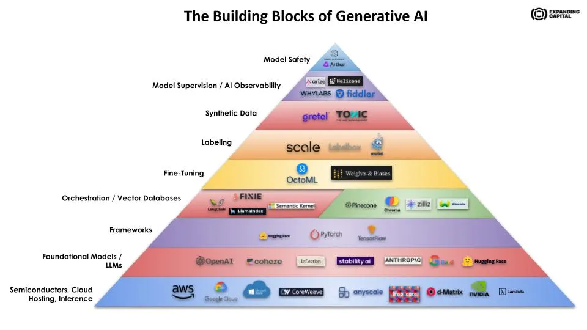

Generative AI Infrastructure Stack#
This lecture provided a structured overview of the layered architecture necessary for effective and responsible deployment of generative AI. It elucidated the key components, including synthetic data, labeling, fine-tuning, vector databases, orchestration layers, and computational infrastructure. It also delved into critical oversight mechanisms like AI observability and model safety. Each layer was contextualized with real-world examples from industry-leading companies, making the lecture both theoretical and applied in nature.
{kind=link}
Large Language & Foundational Models#
Large language models, also known as foundation models, serve as the underlying architecture for an expanding range of AI applications. Trained on extensive collections of text and code, their principal goal is to generate meaningful and coherent text, an objective they achieve using deep learning techniques. The utilitarian scope of these models extends from assisting in content generation for writers to aiding scientists in data mining and analysis.
The efficacy of these models stems from two primary learning paradigms: self-supervised and semi-supervised learning. In self-supervised learning, the model trains on unlabeled data, deriving semantics from contextual and frequency patterns. Semi-supervised learning combines labeled and unlabeled data, enriching the model’s ability to fine-tune its understanding for specific tasks. These learning methods are pivotal in the model’s capacity for various applications, despite potential biases or errors they may exhibit.
A pertinent question that arises when developing applications based on foundation models is the choice between open-source and closed-source models. Open-source models offer public accessibility, facilitating collaborative refinement, and application-specific customization. Closed-source models, conversely, are proprietary, focused on safeguarding intellectual property and ensuring controlled, high-quality usage through predefined APIs. The choice between these two hinges on several factors: the required accuracy, the team’s technical capabilities, and strategic business objectives.
Leading examples in this domain vary in their scope and focus. OpenAI’s GPT-4 is renowned for its conversational capabilities, whereas DALL-E excels at generating images from textual inputs. MosaicML offers an open-source platform recently integrated into Databricks. Meta AI’s LLaMA aims to enhance the accuracy of language models by promoting open-source research. Companies like Anthropic focus on setting benchmarks for responsible AI with models like Claude. Inflection AI aims to democratize personal AI, backed by high-profile investors, while Cohere targets enterprise scalability and reliability.
Semiconductors, Chips, Cloud Hosting, Inference, Deployment#
Generative AI models are resource-intensive, requiring specialized computational power for training and execution. Graphics Processing Units (GPUs), initially designed for graphical tasks, have emerged as the linchpin for training these models. Their architecture is conducive to parallel processing, wherein a larger computational task is subdivided into smaller, simultaneous tasks. Given that AI and machine learning workloads are inherently parallelizable, GPUs serve as an optimal resource.
Cloud computing platforms like Amazon Web Services (AWS), Microsoft Azure, and Google Cloud have become integral in providing the necessary computational resources and storage capacities. These platforms offer scalable GPU resources for training generative models and subsequently deploying them in a variety of applications.
Companies like Nvidia, with a market cap surpassing $1 trillion, underscore the burgeoning demand for optimized compute solutions. New market entrants like d-Matrix are focusing on inference-specific chips. Utilizing digital-in-memory computing (DIMC) techniques, d-Matrix aims to tackle the latency and efficiency challenges that come with inferencing, thereby making AI applications more performant and cost-effective.
On the cloud service front, Lambda Labs and CoreWeave provide specialized services targeting AI workloads. Lambda Labs offers on-demand deployment of AI models via an array of hardware solutions, from workstations to cloud services. CoreWeave, backed by Nvidia and GitHub’s founder, specializes in handling parallelizable workloads at scale, serving clientele that includes generative AI companies like Stability AI.
Strategic collaborations between cloud providers and foundational model companies are reconfiguring the landscape. Microsoft’s significant investment in OpenAI, Google’s alignment with Anthropic, and Amazon’s partnership with HuggingFace illustrate a paradigm shift. The previously unchallenged dominance of AWS, bolstered by credits and innovation, is giving way to more specialized partnerships based on the particularities of foundational models.
Orchestration Layer / Application Frameworks#
Application frameworks serve as the essential layer in the tech stack that allows for seamless integration of Generative AI models with diverse data sources and systems. These frameworks accelerate both the prototyping phase and the utilization of Generative AI applications, effectively acting as the orchestration layer.
LangChain stands out as a key player in this domain. Originally an open-source project, it evolved into a startup offering a specialized framework for building applications using Language Models (LLMs). The core innovation lies in its approach to “chaining” various modular components, which facilitates the development of diverse applications like chatbots, Generative Question-Answering (GQA), and summarization. According to Harrison Chase, LangChain’s founder and CEO, the platform provides two major value propositions. Firstly, it offers a collection of abstractions that serve as modular components, each with a standard interface. This design allows for easy switching between different providers—be it for models, vector stores, or embeddings—with a mere line of code. Secondly, LangChain’s notion of “chains” enables more complex sequences of LLM calls, thus simplifying advanced tasks like RAG and summarization.
Fixie AI, another significant player, aims to bridge the gap between text-generating models and enterprise-level systems. Co-founded by engineering leaders from Apple and Google, Fixie AI enables companies to incorporate language model capabilities into existing workflows, such as customer support. The platform can automatically process customer tickets, retrieve relevant purchase information, issue refunds, and even generate draft responses, thereby making operations more efficient.
Vector Databases#
Vector databases occupy a critical layer in the AI stack, functioning as specialized storage systems designed for machine-understandable data representation. Each piece of data—be it text, image, or other forms—is stored as a numerical vector, essentially converting semantic features into a machine-readable format. These vectors can have an infinite number of dimensions, thus conceptualizing these databases as tables with infinite columns is useful.
Embeddings are a key term within this context. These are specialized vector representations that encapsulate semantic information essential for AI systems to execute complex tasks. For example, an image of a bicycle is represented as a multi-dimensional vector capturing attributes like color, size, and shape. This numerical representation allows for efficient storage and retrieval, providing machine learning models with the data needed for tasks like similarity search and classification.
Various companies are spearheading developments in this space. Pinecone is a leader, offering a distributed vector database tailored for large-scale machine learning applications. With enterprise-level features such as SOC 2 Type II certification and GDPR readiness, Pinecone provides a robust and compliant solution. Chroma is another key player, focusing on high-performance similarity search. It has quickly gained traction since its launch, with a significant number of Python downloads. Weaviate, an open-source option, offers the benefit of flexibility and is compatible with various model hubs like OpenAI and HuggingFace.
Fine-Tuning#
Fine-tuning in Generative AI is analogous to a versatile athlete specializing in a particular sport; it is the process of training a broad-based model on a specific task or dataset to improve its performance in that area. While foundational models trained on extensive datasets can produce coherent and contextually relevant text, they may not exhibit the required precision for specialized fields like healthcare or legal studies. By fine-tuning these models on domain-specific data, they can internalize the specialized vocabulary and contextual nuances, thereby increasing their utility and reliability in those sectors.
This process of fine-tuning is intrinsically aligned with the concept of foundational models serving as platforms for derivative services and products. By leveraging the ability to fine-tune, organizations can create specialized applications without the need for excessive computational resources or data. This approach is not only time-efficient but also cost-effective, particularly when large, specialized datasets are already available.
Companies like Weights and Bias provide platforms and tools that facilitate this fine-tuning process. They offer resources to manage, track, and optimize machine learning models, thus providing an ecosystem that accelerates the fine-tuning process and ensures its efficacy.
Labeling#
Data labeling is indispensable in machine learning and Generative AI, as it provides the contextual anchors that algorithms learn from. The labeling process involves assigning descriptive tags or categories to various types of data—be it images, text, or audio. For instance, an image featuring a bicycle would receive a label such as “bike” or “bicycle,” facilitating the model’s learning. It is crucial to recognize that the accuracy of these labels directly impacts the performance and reliability of the ensuing models.
However, data labeling is far from trivial—it’s time-consuming, often expensive, and requires expertise, making it a significant bottleneck in AI development. For this reason, specialized companies have emerged to tackle this issue. Snorkel AI offers a platform that enables weak supervision, where subject matter experts can programmatically label data instead of doing so manually. This dramatically speeds up the labeling process and maintains a feedback loop for continuous improvement. On the other hand, Labelbox provides an ecosystem that helps manage the data-labeling workflow, making foundational models more enterprise-friendly.
Companies like Scale have carved a niche by specializing in manual annotation services, employing a large workforce for labeling tasks. They offer a comprehensive platform combining software and human expertise for labeling data across different domains. Initially focused on providing labeled data for autonomous vehicles, Scale has broadened its customer base, extending to government agencies and a range of industries including e-commerce and robotics.
Synthetic Data#
The utilization of synthetic data is increasingly gaining traction in the field of machine learning and AI, especially when the availability of real data is constrained. One of the key attributes of synthetic data is its capacity to safeguard privacy. Given that it is artificially created and devoid of personally identifiable information (PII), synthetic data nullifies the risks associated with HIPAA and ensures compliance with stringent data protection laws such as GDPR.
Moreover, synthetic data acts as a force multiplier in enabling scalable machine learning and AI applications. It allows for the generation of large datasets that can be employed for training and deployment, overcoming the limitations associated with real data. Furthermore, synthetic data presents a unique opportunity to enhance diversity and minimize biases. It can be deliberately designed to reflect a broad array of populations and scenarios, thereby fostering fairness and inclusivity in AI systems. Synthetic data also addresses the “cold start” issue faced by startups or projects with insufficient data, facilitating the “last mile” of model training through conditional data generation techniques.
In the evolving landscape of synthetic data solutions, several companies have made noteworthy contributions. Gretel.ai, for example, empowers engineers to produce artificial datasets based on real ones, incorporating generative models and privacy-enhancing technologies. Tonic.ai, on the other hand, markets their data as “real fake data,” laying emphasis on the importance of maintaining the privacy attributes of the original data while providing utility in applications such as software testing and model training.
Model Supervision / AI Observability#
AI observability serves as the lens through which we understand and scrutinize AI models. It is not just about monitoring performance metrics; it’s about ensuring ethical alignment and functionality. Model supervision, a specialized aspect of AI observability, is focused on verifying that AI models behave according to their intended purpose and don’t stray into making decisions that could be harmful or biased.
Data drift is another phenomenon that warrants attention. It signifies shifts in the distribution of data that the model was originally trained on. Such drifts can adversely affect model performance, and if they disproportionately favor certain groups, they can introduce bias, leading to unfair or incorrect decisions. AI observability platforms provide mechanisms to detect and correct for these drifts in real-time, ensuring that models remain accurate and fair over time.
Companies like Fiddler.ai are pioneering in this space. Co-founders Krishna Gade and Amit Paka recognized the lack of transparency and explainability in complex machine learning models. Their platform helps enterprises, including those in the governmental sector, by offering model explainability, modern monitoring, and bias detection solutions. Arize and WhyLabs offer specialized solutions for large language models (LLMs), focusing on real-time guardrails that identify and mitigate various types of problematic behavior. Another company, Aporia, concentrates on customer lifetime value and dynamic pricing, extending its capabilities into Generative AI with new LLM observability features.
Model Safety#
Model safety in generative AI is of paramount importance due to several high-risk factors. One notable issue is the propensity of AI models to replicate and magnify biases present in training data. For instance, Amazon’s AI-based resume screening tool disproportionately favored male candidates, a bias stemming from the male-dominant composition of the training data.
Another concern is the malicious application of AI, such as the creation of deep fakes. These synthetic but realistic media files can be weaponized to disseminate false information, as seen in a recent incident involving a fake image depicting an explosion at the Pentagon. This not only creates public unrest but also highlights the pressing need for safeguards against AI misuse.
Unintended consequences also warrant attention. As AI systems increase in complexity, they may begin to exhibit unexpected behaviors. Case in point, Facebook’s chatbots started creating their own language for more efficient communication, emphasizing the requirement for ongoing monitoring and safety mechanisms.
To mitigate these risks, multiple strategies can be employed. Bias detection and mitigation techniques aim to identify and minimize output biases by enhancing training data diversity and applying fairness algorithms. User feedback mechanisms allow users to flag problematic outputs for further scrutiny. Adversarial testing challenges the AI model with edge-case scenarios to reveal any weaknesses.
Several companies offer solutions in this space. Robust Intelligence provides an AI firewall for stress-testing models and predicting erroneous outputs. Arthur AI also offers a similar firewall focused on large language models, enhancing both their accuracy and explainability. CredoAI focuses on the ethical dimension, guiding businesses in AI governance to manage large-scale risks. Skyflow offers an API-based solution for securely storing sensitive information across sectors like fintech and healthcare.